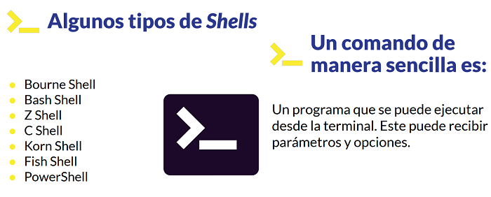
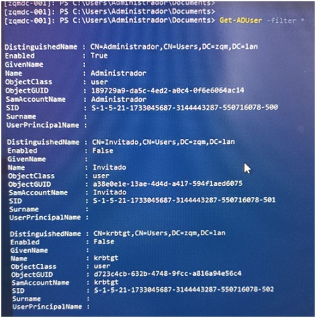

| Referencia | Descripcion | Ejemplo |
|---|---|---|
| La terminal |
Que es una terminal: es una cosola de linea de comandos Cuando hablamos de una línea de comandos nos referimos a una shell *Terminal: Ventanita que nos muestra el prompt. Este aloja a la shell. *Línea de comandos (shell): Un programa que toma comandos y los pasa al sistema operativo para hacer algo. |
 |
| Comandos | windos+shif+s = selecionar una parte de la pantalla |
herramientas para windos: *dev tools: es un conjunto de herramientas para desarrolladores web integrado en el navegador Google Chrome. VisualCode plugin: Prettier: Mejora como se visualiza el código y ayuda a que sea más legible Color Highlight :Muestra los colores en .css para verlos. Live Server : Recarga de forma automática el navegador con los cambios que realicemos. Path Intellisense: Autocompleta rutas de archivos Auto Rename Tag: Permite actualizar al mismo tiempo una pareja de tags de html Material Icon Theme: Muestra iconos para identificar más fácil los tipos de archivos Remote - WSL : se cordine desde la terminal a visual code para que se instale en linux (code .) x 2 veces |
| Navegador web (en inglés: web browser) |
Cuando ingresas una URL o dirección del sitio web (por ejemplo:
platzi.com), este programa se encarga de localizar el servidor
correspondiente a esa dirección y enviarle una solicitud mediante el
Protocolo de Transferencia de Hipertexto (HTTP).El servidor envía la
respuesta y el navegador convierte este código en un sitio web
entendible para el usuario. |
Para presentar el contenido de forma visual, el navegador se vale del
lenguaje de marcado de hipertexto (HTML) y el lenguaje de estilo en
cascadas (CSS), que dan un estilo visual a la información que se
presentará en el navegador mediante etiquetas. Para que el usuario
pueda interactuar con el contenido que se presenta en el sitio web,
usualmente se utiliza el lenguaje de JavaScript, que se encarga de
manejar toda esta interacción en su código y enviarla de vuelta al
servidor. Los navegadores también tienen la capacidad de mostrar otros protocolos y prefijos, como HTTPS, que es HTTP seguro (el estándar utilizado prácticamente en todos los sitios web actualmente), el Protocolo de Transferencia de Archivos (FTP), la gestión del correo electrónico (mailto:) y los archivos (file:). Además, la mayoría de los navegadores también admiten los complementos externos necesarios para mostrar contenidos activos, como videos, audio, archivos PDF y juegos dentro de la página. |
|
Windows Subsystem for Linux WSL manual instalar video |
Con Windows Subsystem for Linux (WSL) podemos correr un ambiente GNU/Linux, incluyendo la línea de comando, utilidades y aplicaciones directamente desde Windows, sin tener que usar un virtual machine o un dual boot. |
Windows+ r -> cmd -> winver ..... despues de intalr wsl -l -v windows terminal: instalar |
| Ubuntu 20.04 LTS es un sistema operativo y es una distribución de GNU/Linux basada en Debian, que incluye principalmente software libre y de código abierto. Puede utilizarse en ordenadores y servidores. |
Comandos *pwd: para saber donde estamos parados *cd: cambiar de directorio -> cd.. pasar al directorio padre *ls: ver directorio *cd / :ir a la raiz *cd mnt :abrir un archivo en windows *cd Users :mi usuario .... cd Usario/Desktop : mi escritorio * cd ~ (126) : nos envia directamente al directorio principal Home * mkdir : crear carpecta o proyecto. ademas con sudo con permisos administrador * touch nombreArchivo : crear archivo * mv nombreArchivo nombreCarpeta : mover archivos o carpetas * code . : para abrir visual studio * cat nombreArchivo : monstrar contenido * man nombreComando : manual de algunos comandos * u : para salir de man |
instalando librerias y dependencias
* sudo apt-get update : consulta si hayde paquetes o manegador de
dependencias por instalar * sudo : da permisos de administrador * sudo apt-get upgrade : agregar las dependcias * sudo apt install nodejs : agreagar una ambiente de ejecucion para JavaScript - * node -v : version * sudo apt install npm : manegador de paquetes de node * npx : a diferencia npm estes primero es mejor no deja el instlador en el pc * sudo npm install -g n : actualizar node en Ubuntu * sudo n latest // sudo n stable // sudo npm install -g npm@latest * npx create-react-app test : es como se va llamar la carpeta * Control + c : Detener el servidor * sudo chown -R carlosTafur ~/ruta : darle permisos para editar * rm archivo : eliminar directorio * rm -d nombraCarpeta : carpecta vavia * rm -rf nombreCarpeta : borrado recursivo si tiene contenido la carpecta |
| Git : gestor versiones y Github es la plataforma microsoft Video |
* git --version : version git * sudo apt-get update // sudo apt-get upgrade * sudo apt install git : instalar Conectar nuesta llave o token SHH en Github * shh-keygen -t rsa -b 4096 -C "correp" :rsa = protocolo ecriptacion -b cantidad bytes * eval "$(ssh-agent -s)" : :evaluar ssh que existiera un agente y estubiera corriendo * ssh-copy-id correoGit : copiar llave ssh * cd ~/.ssh : llegar donde esta shh -> ls -> cat id_rsa.pub : abrir contenidio * git config --global user.email correo : enlazar la terminal con git * git config --global user.name : nombre de cuenta git * git config --edit --global : verificar que se configuro bien // cerrar cont + x |
|
| Power Shell | ||
| Command |
* Get-Command //nos muestra todos los comandos * Get-Command *xxx* //nos trae todos coincidencias * Get-Process //podemos ver los procesos * Get-Service //podemos ver los Servicios * Get-Disk //ver detalle de las unidades de almacenamiento * Get-Volume //ver detalle de las unidades "particiones " |
Windows Server
* Get-ADUser -filter * //Agrega Usuarios "Pero debe ser controlador de dominio el servidor que ejecuta este comando" conectarse a un servidor que si sea controlador de dominio 1. abrir una nueva sesion * New-PSSession -ComputerName xxxxxx -credential zqm\administrador //Conectarse a otro equipo ya despues nos pide el password  2. Entrar a la session * Enter-PPSession -Id x //Ingresar a la session la x es el id que nos mostro en el parametro anterior ahora podemos ver la lista de Usuarios, ademas podemos ver que estamos adentro de la maquina el prompt cambio  * exit //Salimos de la Session * Invoke-Command -ScriptBlock {{this.abrellave}}Get-Process{{this.cierrallave}} -ComputerName {{this.abrellave}}"zqmdc-001"{{this.cierrallave}} -Credential {{this.abrellave}}zqm\adminsitrador{{this.cierrallave}} //Con este comando podemos ejecutar un bloque de codigo para otro equipo |